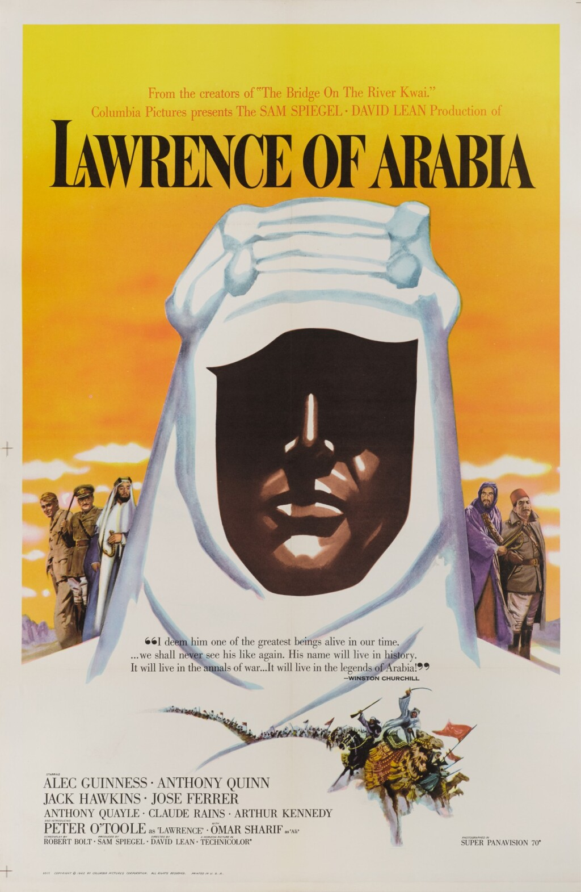

Lawrence of Arabia
35th Academy Awards
(Oscars 1963)
10 Nominations, 7 Awards
| Nominations | ||
|---|---|---|
| Category | Nominees | Result |
| Best Picture | Sam Spiegel | Won |
| Actor | Peter O'Toole | Nominated |
| Actor in a Supporting Role | Omar Sharif | Nominated |
| Directing | David Lean | Won |
| Writing (Screenplay--based on material from another medium) | Michael Wilson and Robert Bolt | Nominated |
| Cinematography (Color) | Fred A. Young | Won |
| Film Editing | Anne Coates | Won |
| Art Direction (Color) | Dario Simoni, John Box, and John Stoll | Won |
| Sound | John Cox | Won |
| Music (Music Score--substantially original) | Maurice Jarre | Won |